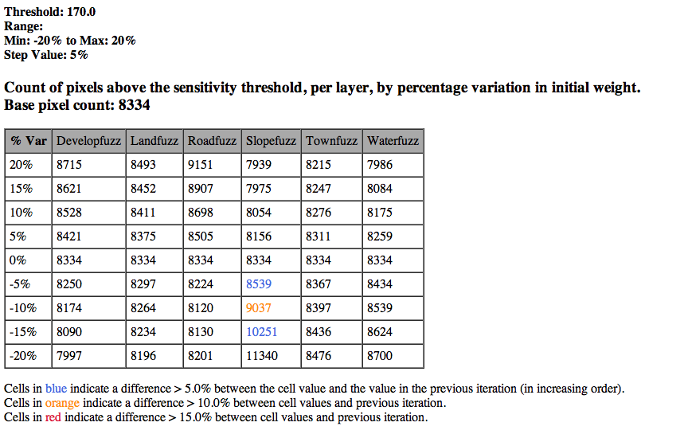
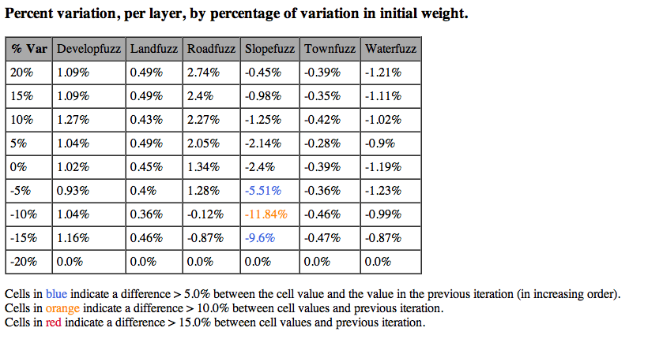
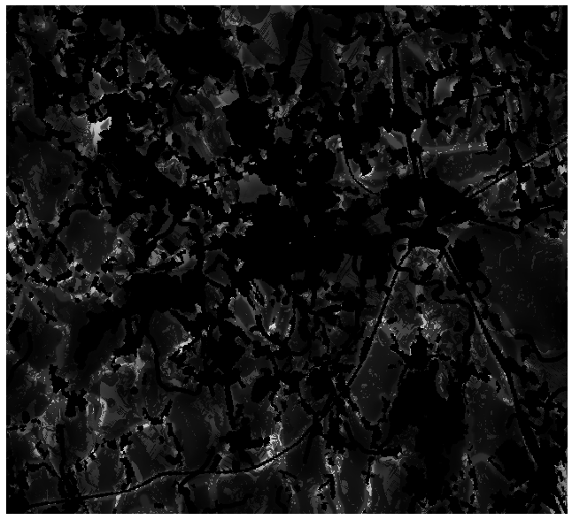
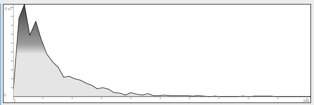
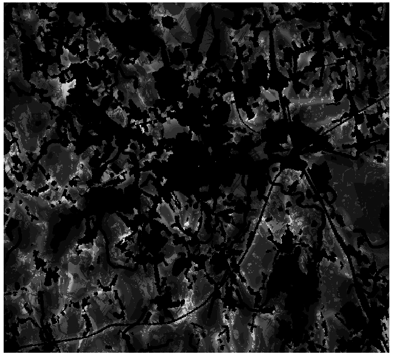
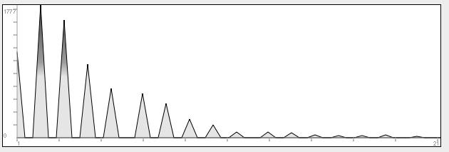

JP Glutting (jpglutting@gmail.com)
MCELite is a multi-criteria evaluation (MCE) tool written in Python. Given the appropriate raster layers as input, it executes one of three types of MCE: Boolean overlay, weighted linear combination (WLC) or ordered weighted averaging (OWA). The installation package includes documentation and examples.
MCELite is designed to work in four modes: as a standalone Python library that can be called from other Python programs, as an ArcMap 9.3 plugin, as an IDRISI Taiga plugin and as a QuantumGIS (QGIS) plugin. A command line script for running MCELite (mcel.py) is included with the library. Each specific installation includes an “mcelite” package in a sub-directory. [This document refers only to the QGIS version of the tool].
MCELite requires, in addition to the standard libraries included with Python, that GDAL with Python bindings be installed, as well as the Python numeric extension module, Numpy. GDAL is included with all three of the software packages for which MCELite functions as a plugin, and the Numpy module is installed with QGIS and ArcMap. However, GDAL is not available to Python in either IDRISI or ArcMap, and needs to be installed separately. GDAL, of course, must be installed independently to take advantage of the standalone functionality of MCELite.
The standalone version of MCELite requires Python version >= 2.5 and < 3.0. It also requires the Numpy libraries and access to the GDAL libraries with Python bindings. Some of the packages that the tool works with provide access to these libraries, but the standalone version must have all of these installed. The easiest way to install all of these packages in Windows to use the Open Source Geospatial Foundation package for Windows (OSGEO4W), available at http://download.osgeo.org/osgeo4w/osgeo4w-setup.exe.
To use GDAL, system settings need to be modified (under Control Panel => System and Security => System in Windows 7). The Path variable needs to have C:\OSGeo4W\bin added to it. The PYTHONPATH variable needs to have C:\OSGeo4W\apps\gdal-16\pymod added to it (or whatever available GDAL version desired instead of gdal 1.6). After making changes, all open terminal and ArcMap sessions need to be restarted.
For OS X the required libraries and tools are available from a variety of locations, the best probably being the MacPorts project (http://www.macports.org/). Separate installer packages are also available from William Kyngesburye at his website (http://www.kyngchaos.com/macosx/index).
Linux packages are available as source code from the various project websites, or more easily through a package manager (such as the Apt system in the popular Ubuntu Linux distribution). The 10.10 version of Ubuntu provides version 1.4 of QGIS, which works well with MCELite.
This package includes the mcelite library and a command line interface (CLI) script (mcel.py). The script is called as follows, for example: “mcel.py -c <path_to_config_file>/bool_win_example_configuration.txt”. The -C flag indicates the configuration file. There is an optional -e (“environment”) argument, but it is not needed as the script will provide a default.
MCELite requires the Numpy Python package and an installation of GDAL with Python bindings. Any recent version of these libraries is sufficient.
The installation of the standalone application involves simply unzipping the compressed file. To make use of the QueryManager and RasterServices libraries outside of the directory where files are unzipped, the mcelite lib directory should be copied to the site-packages directory of the active Python installation.
In the standalone mode, the mcelite library can be imported into Python programs (or the interactive Python interpreter) and used to manipulate rasters. Much of the preliminary testing of MCELite functionality was done from the command line, and this mode is ideal for automating analytical tasks. The command line also makes it possible to use MCELite for more extensive data sets than are possible with the GUI versions (with more than ten constraint and ten factor layers, for example).
A configuration file with the parameters of the analysis will always be written into the same directory as the results, with the file name “<results_filename>_configuration_<MCEtype>.txt” (for example, “first_test_configuration_WLC.txt”).
The QGIS version of MCELite on Windows requires version 1.5 of the QGIS program. This can be installed using the OSGEO4W package installer (http://download.osgeo.org/osgeo4w/osgeo4w-setup.exe) or using a QGIS standalone version. The NumPy and GDAL libraries and bindings are provided by QGIS and do not require a separate installation.
MCELite is available through the QGIS Plugin Repository (via the QGIS Plugin interface or the web at http://pyqgis.org/repo/contributed).
The MCELite tool interface uses a single window with three labeled tabs, “Bool”, “WLC” and “OWA”. These correspond to Multi-criteria analyses using the Boolean overlay method, the weighted linear combination method, and the ordered weighted averaging method, respectively. The interface allows the user to select the type of analysis desired and to input the various parameters (constraint and factor files, weights, and sensitivity analysis parameters), as well as load a configuration file and modify the input parameters before executing the analysis (the new configuration will be saved in a configuration file, of course).
There are several analytical functions that can be executed by MCELite. The package was designed as a work-alike to the IDRISI MCE tool (with the addition of the sensitivity analysis feature). However, MCELite does not have functionality for developing fuzzy membership criteria or factor weights. Factor files will have to be developed using other tools and the raster layers created used as input to the MCELite tool.
Each version of the tool includes a directory called “examples” with sample data and sample configuration files for Windows and UNIX systems that uses the data to run the three types of analysis. The paths in these files need to be modified to indicate the correct directory where MCELite is installed. An easy way to develop a set of configuration files is to run an analysis with the interactive tools, and edit the configuration file that is produced (all analytical runs produce configuration files by default).
This analytical process involves multiplying all the rasters (constraints and factors) together. All factors must represent Boolean criteria, so the final effect is a raster of ones and zeros, where the areas with a value of zero are screened out and the areas with a value of one meet all the selection criteria. There is effectively no difference between the way constraints and factors contribute to the final results when using this method.
More information on this method is available from the IDRISI Taiga tutorial, Exercise 2-7 (Eastman 2009).
This methodology consists of establishing constraints (as boolean rasters) and factors, as rasters which represent selection criteria transformed to a common value scale (0-255, etc.). This scaling transformation functionality is not included in MCELite. The factors are then given weights (using any number of different methods, which are not a part of the functionality of MCELite) and these weights are applied to the factors in a combinatorial method, as described by Malczewski (2000).
More information on this method is available from the IDRISI Taiga tutorial, Exercise 2-8 (Eastman 2009).
OWA uses the same methodology as the WLC initially, but after the weights are established, a set of order weights, one per factor layer, is also established. These order weights are applied to the ordered set of values at each raster pixel, in the order of the values from lowest to highest. More information on this methodology is available from the IDRISI Taiga tutorial, Exercise 2-9 (Eastman 2009).
The OWA function in MCELite reduces the range of the original data, using the method described by Rinner and Malczewski (2002). The IDRISI method apparently has a function that re-scales the results to the original value range. A similar function may be implemented in later versions of MCELite.
A sensitivity analysis can optionally be applied to the last two analytical methods. The user can select any combination of the factor layers for a sensitivity analysis, by index number. A sensitivity analysis varies the weights of the selected factors by a certain percentage between a minimum and maximum range (usually a negative and positive number), at selected step values in the range. Pixel counts are generated for the results of each modified analysis, which are then presented in a comparative results table. The following parameters are used in the analysis:
Sensitivity Threshold: The value for counting pixels in the results raster (pixel values greater than the threshold will be counted and saved for comparative analysis). This is the acceptability threshold for the final decision in the process.
Minimum: The lowest value for the comparative range.
Maximum: The highest values for the comparative range.
Step: The step value for the range
The default values are 175, -0.2, 0.2 and 0.05, respectively, for threshold, minimum, maximum and step. The sensitivity analysis then generates a new analysis for each modification to each weight value (adding the modified percentage, for example, weight w of factor f would be modified by w + (w * -0.2), then w + (w * -.15) and so on until w + (w * 0.2). For each new weight value, a new analysis is run.
Results are presented in an HTML formatted table in the same directory as the results file with the name “<results_filename>_sensitivity_results.html”. The table shows the step values analyzed and the count of pixels above the selected threshold, both as absolute values and percentage changes from the results in the previous step value (in increasing order). Values that differ by more than the step value are highlighted in color (Figure 1).
Figure 1: Results of a default WLC sensitivity analysis, raw scores


Configuration files have a single format across all versions of MCELite. A configuration file with the parameters of the analysis will be written into the same directory as the results, with the file name “<results_filename>_configuration_<MCEtype>.txt” (for example, “first_test_configuration_WLC.txt”). They are simple text files, with one entry per line, and are divided into sections with the values or series of values in the section entered, one per lines. If a section is left blank, it will be ignored, if possible. The file has the following sections (see example below):
The easiest way to make a configuration file is to run an analysis from the GUI and edit the configuration file automatically created by the analysis. There are also sample configuration files included in each version of MCELite, in the examples sub-directory. The paths need to be adapted to the local filesystem. Line endings must be appropriate for the operating system used, so transferring configuration files from one system to another can results in errors.
A sample configuration file:
mcetype
OWA
output_format
GTiff
results
/Users/jpg/.qgis/python/plugins/mcelite/examples/results/owa_osx_example.rst
constraints
/Users/jpg/.qgis/python/plugins/mcelite/examples/data/landcon.rst
/Users/jpg/.qgis/python/plugins/mcelite/examples/data/watercon.rst
factors
/Users/jpg/.qgis/python/plugins/mcelite/examples/data/developfuzz.rst
/Users/jpg/.qgis/python/plugins/mcelite/examples/data/slopefuzz.rst
/Users/jpg/.qgis/python/plugins/mcelite/examples/data/landfuzz.rst
/Users/jpg/.qgis/python/plugins/mcelite/examples/data/townfuzz.rst
/Users/jpg/.qgis/python/plugins/mcelite/examples/data/waterfuzz.rst
/Users/jpg/.qgis/python/plugins/mcelite/examples/data/roadfuzz.rst
weights
0.1085
0.3171
0.062
0.0869
0.1073
0.3182
oweights
0.5
0.3
0.125
0.05
0.025
0.0
sensitivity
0
4
5
min
-0.2
max
0.2
step
0.05
threshold
22.0
end
This file will execute an Ordered Weighted Averaging analysis, using the factors, constraints, weights and order weights as indicated. A sensitivity analysis will be run on first, fifth and sixth factors weights (developfuzz, waterfuzz and roadfuzz).
MCELite has not been extensively tested. The QGIS version of the plugin has been tested, however, on Mac OS X, version 10.6.4, Ubuntu Linux (version 10.10, QGIS version 1.4), and Windows 7, Home Premium (64 bit). The IDRISI and ArcMap versions of the plugin have been tested on IDRISI Taiga 16.05 and ArcMap 9.3.1, both on Windows 7, Home Premium edition (64 bit).
The MCELite package was tested to ensure conformity with results produced by the IDRISI MCE tool, for all three basic analysis types (the IDRISI MCE tool does not include sensitivity analysis). The test set was based on exercises 2-7, 2-8 and 2-9 of the IDRISI Taiga Tutorial (Eastman 2009). MCELite produced identical results for the Boolean and WLC analyses, and slightly different results for the OWA analysis. Results files to check compliance can be found in the examples/results_reference sub-directory of the MCELite installation.
Because the OWA procedure (see Ordered Weighted Averaging section, above) involves multiplying factor weights at a specific coordinate by two decimal numbers between 0 and 1 before summing, the final value range results is necessarily reduced. IDRISI apparently applies a scaling algorithm to the final results to extend them to the same range as the original input (8 bit integers, with values from 0 to 255). In the OWA example, the value range for the original IDRISI-produced results was 0 - 246, while the value range for the MCELite was 0 - 21. Nevertheless, it is apparent in Figures 3-6 that the value distribution is similar across the smaller range. There is the issue that rounding the results to 8-bit integer values without rescaling may lose some information, as can be seen in Figure 6, showing the discontinuous data range due to the data being rounded to integer values.
Figure 3: Results of IDRISI OWA Analysis (zero values black, display stretched to Min-Max [0-246])

Figure 4: Graph of IDRISI OWA Analysis data values (0-246)

Figure 5: Results of MCELite OWA Analysis (zero values black, display stretched to Min-Max [0-21])

Figure 6: Graph of MCELite OWA Analysis data values (0-21)

There are important limitations in the implementation of MCELite, as the name indicates. The use of this tool on very large rasters is likely to consume substantial memory and provoke swapping (although memory use was modest when tested on the sample dataset). There are some ways to deal with this problem by “chunking” the data, using the Rasterlite format (http://www.gdal.org/frmt_rasterlite.html), which integrates raster data into SQLite3 database files. The program attempts, to the extent possible, to reduce memory usage by keeping raster data in memory for as short a time as possible and limiting concurrent calculations with raster files.
The GUI itself if something of a limitation, making it impractical to work with more than 15 or so layers of one type (in QGIS). The ArcGIS GUI interface is awkward and makes it difficult to see all the parameters at the same time. Neither of these are limitations with the standalone command-line interface, of course, which reads data directly from configuration files.
One very important limitation is the lack of fuzzy set membership functions in QGIS. This means that the most useful type of input rasters need to be developed with external tools.
There are any number of ways that MCELite could be improved, starting with addressing the aforementioned limitations. There are other QGIS plugins that manipulate raster files, one of the most relevant being RasterCalc. No code from that project was used in MCELite, but there may be better ways to implement the RasterObject. At the very least, RasterCalc supports more raster functions than MCELite.
Currently, MCELite does not provide any functions for developing fuzzy criteria, which would be useful for the development of the factor layers. As far as the author is aware, there are no fuzzy criteria tools yet available for QGIS.
MCELite loads raster data directly from the filesystem. Using layers already loaded into the GIS suite being used would be an attractive feature. This is possible in QGIS, and will be implemented later.
A number of different analytical features are possible, building on the base in the program, using different weighting techniques (Malczewski 2000). Also, based on the sensitivity analysis functionality, the program can easily calculate many different versions of a set of parameters, modifying them slightly, applied to either factor weighting or order weighting. This would make it possible to analyze a large set of similar situations, and compare the results. A standard set of order weights representing low risk, high risk, moderate risk, 3/4 risk, etc. could be established and applied to an OWA analysis as a block.
It should also be possible to convert some of the modules into C/C++ code, and implement multi-threaded execution, which could be fairly straightforward for the sensitivity module, provided available memory was sufficient. One limitation to this would be losing the functionality of the numpy module (written mostly in C) and having to re-implement it (or copy the source).
As the software has not been extensively tested, there are sure to be issues at some point. Please submit any bug reports to jpglutting@gmail.com, with the subject line “MCELite”. Include as much information about your system and the errors as possible, and I will get back to you as soon as I can.
Some basic information about how MCELite works for use from other Python programs.
MCELite uses a functional hierarchy of objects (not an inheritance hierarchy – see Figure 7) to work. There are four basic classes that make up MCELite: QueryManager, i>QueryObject, RasterProvider and RasterObject. RasterProviders create RasterObjects and provide file reading/writing services for raster data. RasterObjects contain raster data and geotransform and projection information. The raster grid data is contained in a series of Numpy arrays, which also provide the raster algebra functionality, within each RasterObject. Although only the first layer is used as a part of MCELite, the classes are prepared to work with rasters having any number of layers. RasterObjects also contain logic for the necessary operations (addition and multiplication) required by MCELite functions.
Figure 7: Functional Hierarchy of MCELite Classes
The QueryManager class, which is sub-classed for each application ( QgisQueryManager, IdrisiQueryManager and ArcQueryManager), manages the importation of information and settings from the execution environment, and the creation of necessary QueryObjects. The QueryManager transfers data and settings to QueryObjects, and calls QueryObject functions which carry out the analysis required. Results are held in RasterObjects embedded in the QueryObjects. Each QueryObject also has an embedded RasterProvider object. QueryObjects are given references to the input raster files needed, and the RasterProviders create instances of RasterObjects from the files. Each QueryManager object also has an embedded RasterProvider to manage the output of the results to the appropriate file format.
RasterProviders manage all file reading and writing, and in the future will manage movement of raster data from rasters opened in the GIS suites (the ArcGIS RasterToNumPyArray and NumPyArrayToRaster functions in ArcMap 10 are examples).
The QueryManager is largely redundant under normal circumstances, but when carrying out a sensitivity analysis it creates multiple QueryObject instances (in series, rather than concurrently, to limit overall memory use) to compare the results of modifying analytical parameters.
MCELite re-implemented a raster object for two principle reasons: portability and extensibility. By implementing a raster object within the plugin itself, the code could be ported more easily to other operating systems and used with other software packages. The GIS packages only transfer the parameters to MCELite and displays the results, as well as some informational messages.
The raster object also helps with the extensibility of the tool, by making it easier to modify the functionality of the objects themselves.
Eastman, JR (2009) IDRISI Taiga Tutorial. Tutorial Version 16.02. Clark Labs, Worcester MA.
Feick, RD and Hall, GB (2004) A method for examining the spatial dimension of multi-criteria weight sensitivity, International Journal of Geographical Information Science, vol 18, no 8, 815-840.
Malczewski, J (2000) On the Use of Weighted Linear Combination Method in GIS: Common and Best Practice Approaches, Transactions in GIS, 4(1), 5-22
Rinner, C and Malczewski, J (2002) Web-enabled spatial decision analysis using Ordered Weighted Averaging (OWA), The Journal of Geographical Systems, 4, 385-403